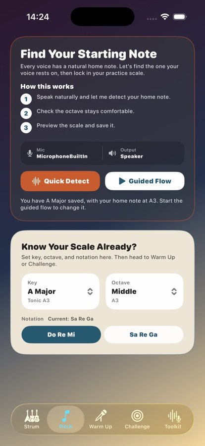
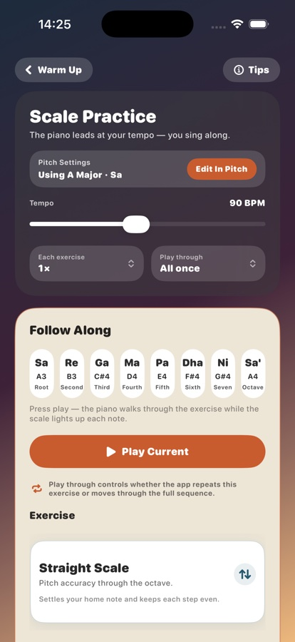

Strum Studio
Start with one chord and a metronome, then add beginner-friendly chord changes as your rhythm improves.
Build guitar rhythm, tune your instrument, find your home note, warm up your voice, and train your ear with daily Mystery Sequence challenges.
For iPhone. Designed for short daily guitar, voice, and ear-training sessions.
Built for practice
Strum & Sing keeps each practice job focused: feel the beat, tune the guitar, set your scale, warm up, then use challenges to check whether the note is really there.
Start with one chord and a metronome, then add beginner-friendly chord changes as your rhythm improves.
Listen through the mic, auto-recognize the nearest string, and see clear flat, sharp, and in-tune feedback.
Use Quick Detect or the guided flow to find your home note, then carry that scale into Warm Up and Challenge.
Practise scale notes, lower notes, and steady hiss breathing with microphone feedback and simple progress cues.
Hear short melodies, sing them back, use hints when needed, and reveal a music tip after each solved sequence.
Use the tanpura drone and Live Scale to find your notes, with starter guidance beside the tools.
Strum Studio
Start with a clean pattern, choose the practice sound you want, and follow the beat before adding more chords.

Pitch
The Pitch tab helps you save a comfortable home note and notation style before moving into exercises.
Vocal practice
Warm Up teaches the placement. Challenge checks it. Mystery Sequence keeps the ear-training part short, musical, and repeatable.

Pick or detect the home note and scale that fit the voice.
Follow piano-led exercises like Straight Scale and Ascending Pyramid.
Hear a short sequence, sing it back, and use hints when needed.
Use the tanpura drone and Live Scale after the note positions are familiar.
Mystery Sequence
Mystery Sequence plays a short melody and asks you to sing it back. The app listens, locks notes as you hit them, and gives a hint without turning the exercise into a lecture.
Toolkit
The Toolkit area includes the tanpura drone and Live Scale, helping you find your notes against a steady home-pitch reference.
Download Strum & Sing on the App Store and use a few clear minutes each day to tune, strum, warm up, train pitch, and solve a Mystery Sequence.